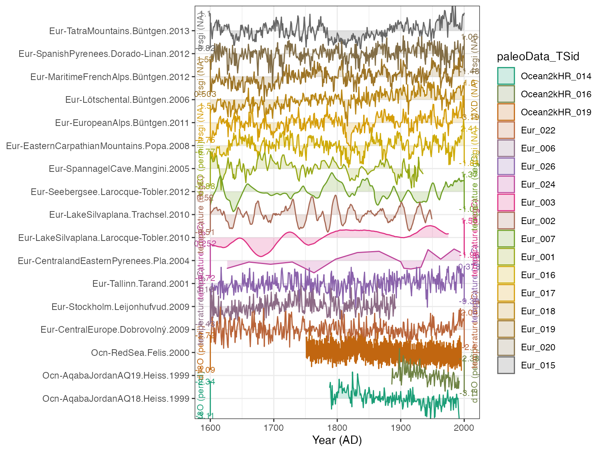
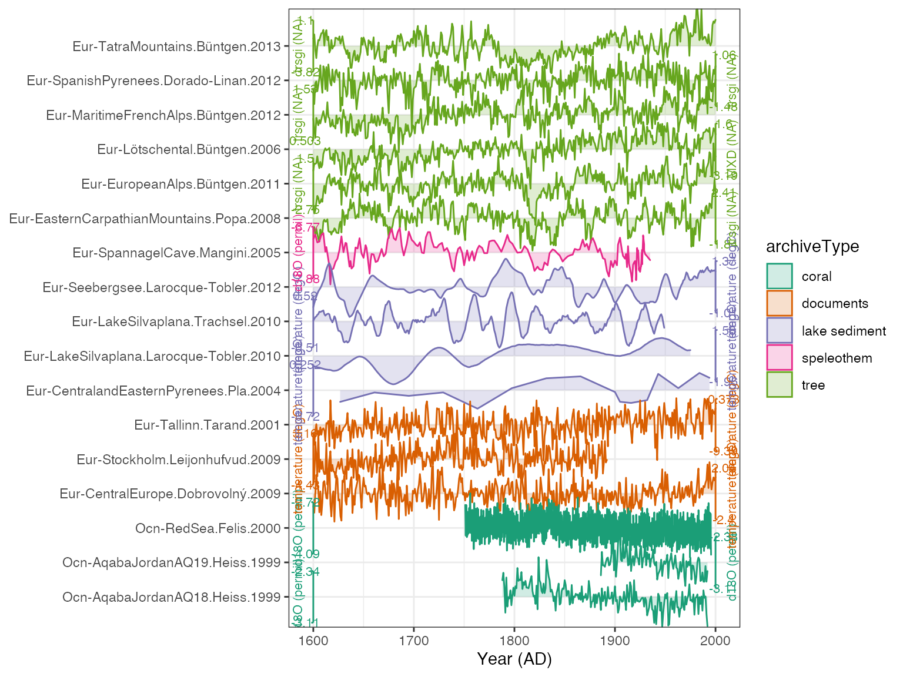
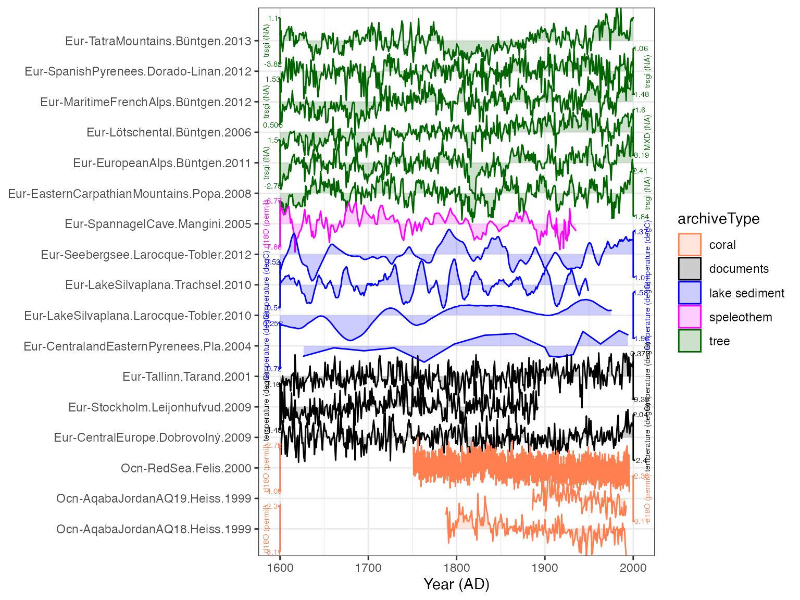
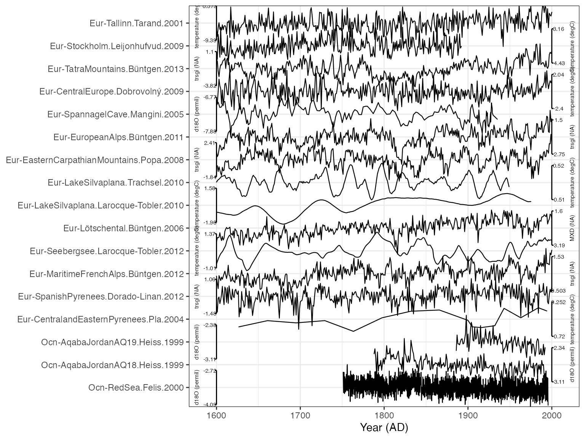
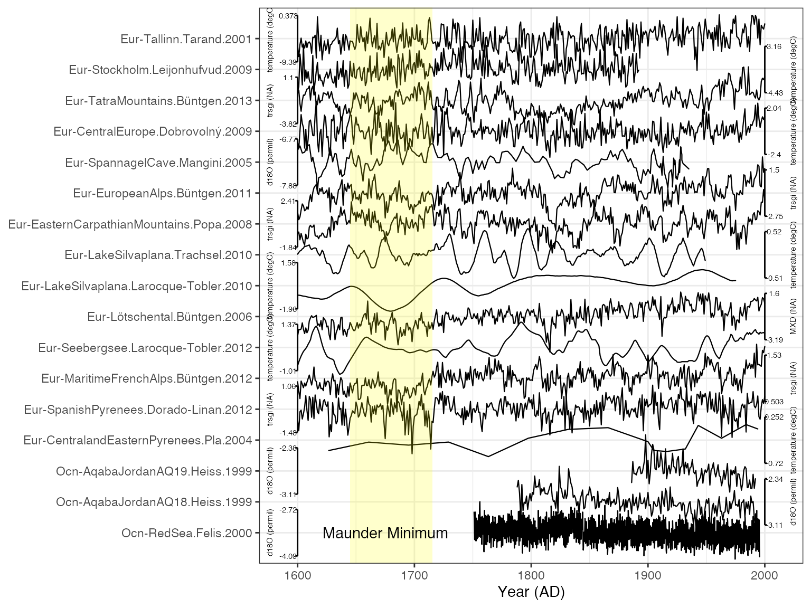

vignettes/PlotTimeseriesStack.Rmd
PlotTimeseriesStack.RmdA stalwart of paleoclimate data visualization, for good or bad, is stacking a bunch of timeseries vertically to examine similarities and differences. Although comparing timeseries in this way can be problematic, it remains a space-efficient way to visualize many records. It is straightforward to create such a plot with LiPD data in geoChronR.
Here we’ll load in a handful of data from PAGES2k v2.1.0 database, and explore some of these options.
Load in some data. Below is an example of loading a zip file of LiPDs directly from the web. You can also load individual LiPD files from a url. You also might specify the path to a local file or folder here D <- readLipd("~/MyLipds/"), or use it interactive mode D <- readLipd(). If you’re selecting a directory in interactive mode, just click on any file in the directory that you want.
D <- readLipd("http://lipdverse.org/geoChronR-examples/euro/Euro2k.zip") OK, now you have a large list of all your files. It’s almost always to work with the data as a “timeseries object”, so let’s extract one of those.
TS <- extractTs(D)There will be two opportunities to filter your potentially very large collection of data down to what you want to analyze. Our next step, creating a “tidy” data frame, can be very slow with large TS options, so it’s best to filter what you can with the TS object first. See ?filterTs for options on how to do that. Here, we’re going to grab all the records with the “paleoData_useInGlobalTemperatureAnalysis” flag, and filter geographically a bit.
The tidyTs() function will take a timeseries object and turn it into a long, “tidy”, data frame, where each row is an observation, and each column a variable. This will play very nicely with the tidyverse and facilitate efficient data analysis and visualzation. With large TS objects, this can result in data.frames with millions of rows, and can be quite slow to create.
tidyData <- tidyTs(mts,age.var = "year")
#filter for plotting
plot.df <- tidyData %>%
filter(between(year,1600,2000)) %>% #only years from 1600 to 2000
filter(between(geo_longitude,0,50)) %>% #only European longitudes
filter(between(geo_latitude,20,60)) %>% #between 20 and 60 N
filter(interpretation1_variable == "T") %>% #only variables sensitive temperature
group_by(paleoData_TSid) %>% #group by column
arrange(archiveType) #and sort by archiveTypeThat last arrange() command controls the order of the data frame, and will also control the order of the stack.
The key function for this is plotTimeseriesStack(), and has many options (?plotTimeseriesStack). We can start simply by giving it the data frame and using the default options:
#plot the stack and color by Archive type
plotTimeseriesStack(plot.df) ## Adjusting the options
OK! We have a plot! It looks decent, and by default it colors it by the TSid, but we might rather color it by archiveType. We do that simply:
plotTimeseriesStack(plot.df,color.var = "archiveType")
Better. But we need to make the axis labels smaller, and want to give it some more intuitive colors for each archive
plotTimeseriesStack(plot.df,
color.var = "archiveType",
lab.size = 2,
color.ramp = c("coral","black","blue","magenta","dark green"))
That looks pretty good! Perhaps we think this is too colorful for a journal submission, and we don’t want the shading along each line. And we also want to arrange the lines by latitude instead of archive.
plot.df <- arrange(plot.df,geo_latitude) #order by latitude
myPlot <- plotTimeseriesStack(plot.df, #create another plot, storing the output
lab.size = 2,
color.ramp = "black",#if we specify one color, all the records will get that
fill.alpha = 0, #make the fill transparent
lab.space = 3, #add it a bit more space between the axis labels and ticks
line.size = 0.4) #make the lines a bit thinner
print(myPlot) 
The output of plotTimeseriesStack is a standard ggplot object, which means you can customize and adjust axes and add additional layers. As an example, let’s add rectangular box to highlight an interval of interest, the Maunder Minimum.
The x-axis for our plot is time, and the y-axis is the number of records, counting from the bottom.
myPlot + annotate(geom = "rect", colour = NA, fill = "yellow", xmin = 1645, xmax = 1715, ymin = 0, ymax = length(unique(plot.df$dataSetName))+1,alpha = 0.2) +
annotate(geom = "text", x = 1675, y = 1, label = "Maunder Minimum")